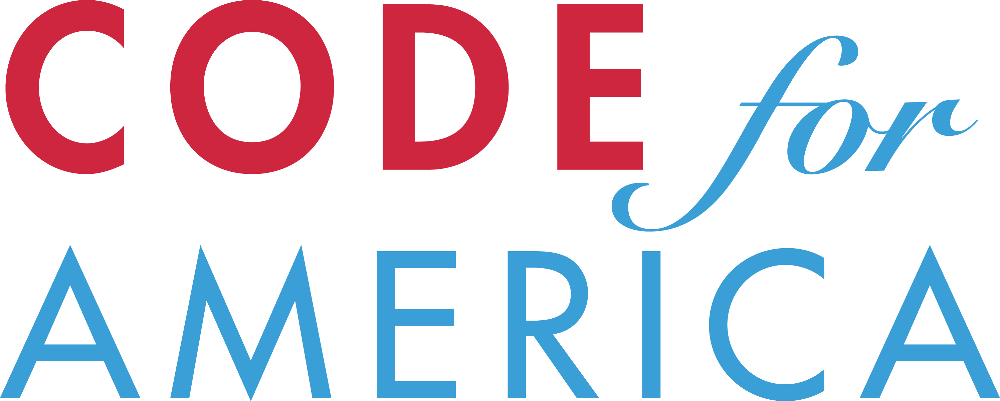
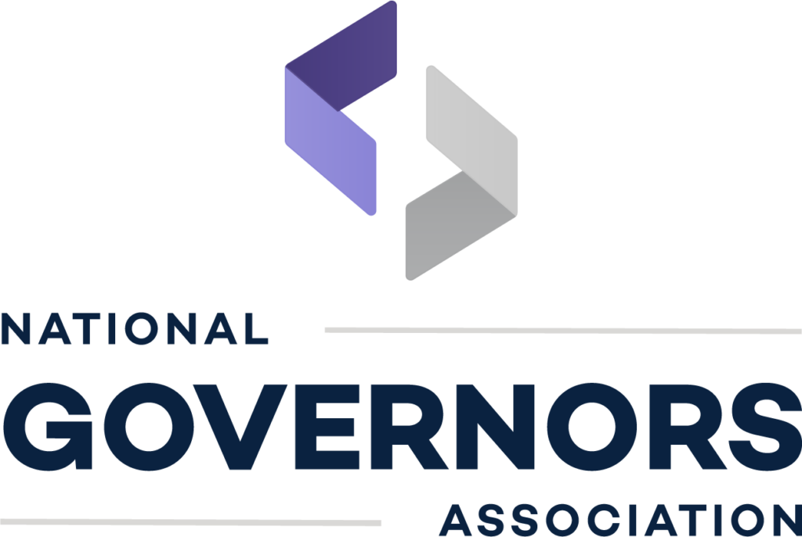
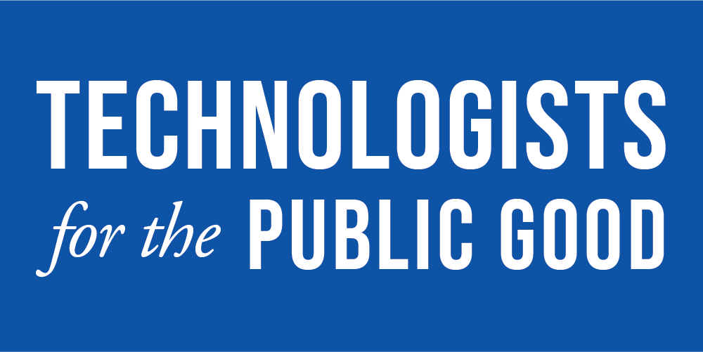
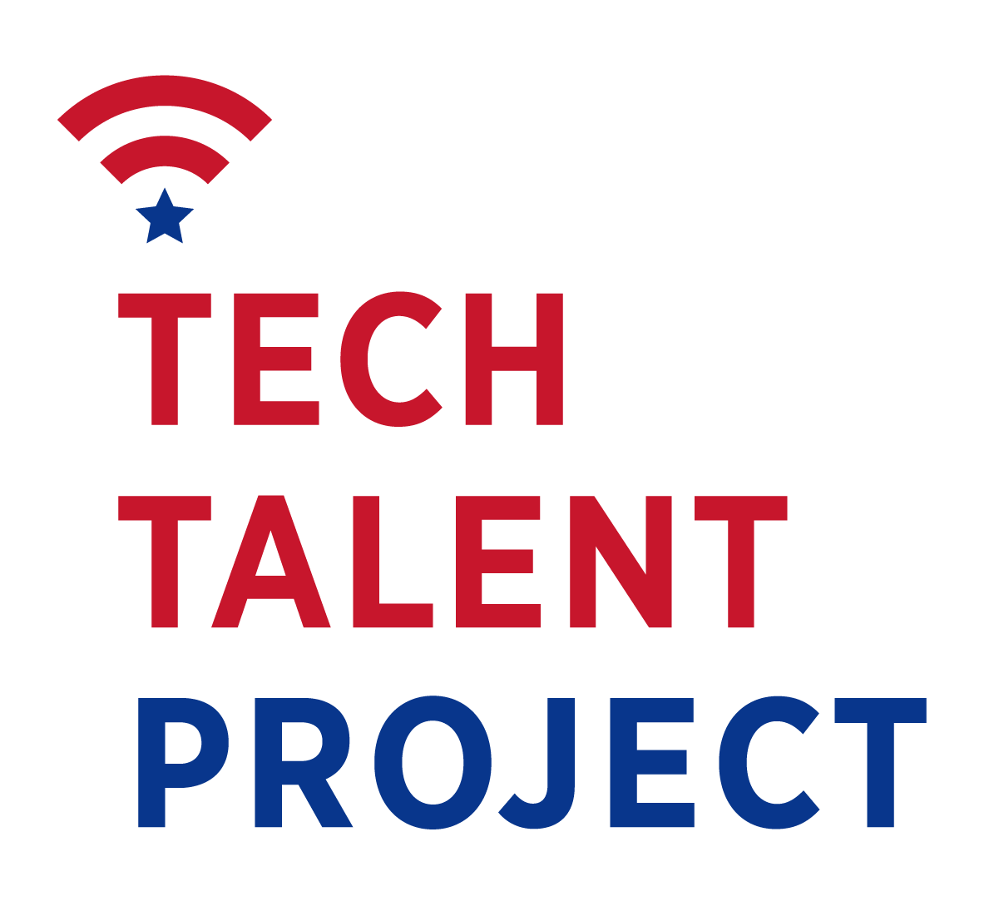
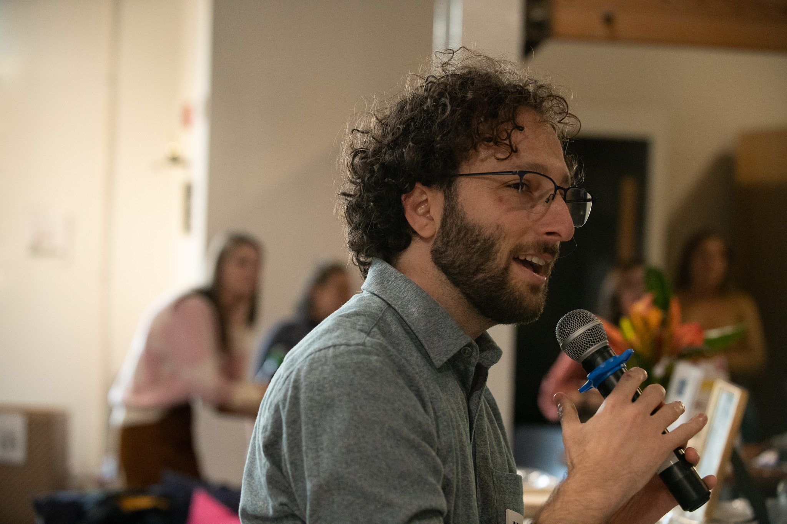

Orgs I’ve impacted





Hi, I'm Mark. For over ten years, I’ve partnered with federal, state, and local governments to adopt modern ways of working and deliver great public services that actually work for people.





For executives and leaders who want to build modern tech capacity to deliver on their policy priorities.
For mission-driven groups looking to build communities, tell stories, or understand what makes government work better.
For modern tech and design companies that need an independent technical eye, an experienced team lead, an expert facilitator, or a strategic partner.
For coordinators looking for a speaker, emcee, or workshop leader to keep publicly-minded audiences engaged.
If a critical public service process or project isn't working right, I’ll collaborate with leaders and practitioners across your organization to figure out root causes. I'll work with your executives, users, engineers, and contractors to give you a clear roadmap to turn things around.
If you need to align a group of people around a concept, vision, or problem, I'll work with you to bring those people together. I'll design and host immersive, interactive, small-group sessions to help your leadership team align on goals, address internal friction, and build your vision for the future.
If you want to build or improve a professional network, a fellowship program, or a mentorship system, I can help. I'll build the community structures, automate the behind-the-scenes software, encourage peer support, and set up a culture of inclusion and action.
Sometimes you just need an experienced public sector technologist on your side for a few hours a week. Whether you need a leader in an acting position or short-term support to solve a particular problem, I provide independent strategic advice and technical reviews without the overhead of a full-time hire.
How I ran a professional community of over one thousand passionate practitioners, gathered hundreds of peers in convenings across the country, and built trusted spaces for cross-sector leaders to lean on each other.
An overview of my published works pushing the field of public interest technology forward, including case studies, academic publications, reports, podcasts, and videos.
A look at my roles in technical procurements across levels of government, from initiating a government’s first agile procurement to leading the technical review of over one hundred tech vendors on a billion-plus dollar contract.
Where the rubber meets the road: a catalog of my hands-on work in building and supporting critical public services, from technical delivery to leadership.